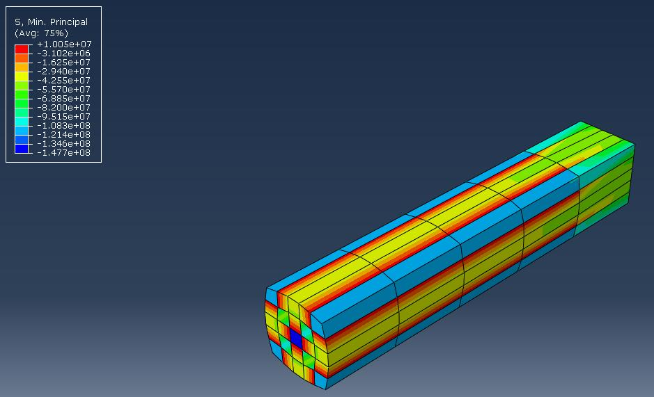
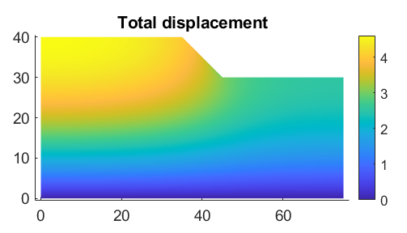
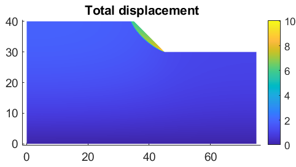
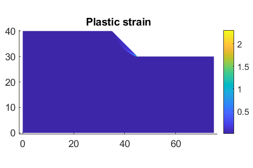
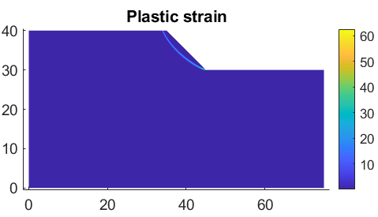

Quel impact un changement apparemment minime dans la qualité du roc peut-il avoir sur la stabilité de toute une pente? Pour ce projet en génie géotechnique avancé, j’ai étudié l’influence de la qualité du massif rocheux sur la stabilité des pentes en combinant données de laboratoire, mécanique des roches analytique et modélisation numérique.
À partir de résultats d’essais triaxiaux provenant d’un site de pente rocheuse dans le nord du Québec, j’ai dérivé les paramètres de résistance de Hoek–Brown et je les ai convertis en paramètres équivalents de cohésion et d’angle de frottement de Mohr–Coulomb. J’ai ensuite évalué deux conditions de massif rocheux — un roc intact à un GSI de 100 et une condition dégradée à un GSI de 85 — afin de quantifier l’influence de la qualité géologique sur la résistance et la déformation.
Les paramètres obtenus ont été intégrés dans MATLAB pour une analyse non linéaire de stabilité des pentes, tandis qu’Abaqus a servi à développer un modèle 3D par éléments finis et à visualiser les contraintes principales et la déformation du matériau rocheux intact. L’analyse a démontré qu’une réduction du GSI peut réduire significativement la résistance au cisaillement et augmenter la déformation, soulignant l’importance de représenter des conditions géologiques réalistes lors de la prédiction du comportement et de la sécurité des pentes rocheuses.
01 — Modélisation par éléments finis


Modèle 3D par éléments finis Abaqus — distribution des contraintes principales et déformation du matériau rocheux intact selon les paramètres de résistance de Mohr–Coulomb.
02 — Effet de la qualité géologique




03 — Constat technique
Une qualité géologique plus faible a entraîné une résistance au cisaillement moindre, un déplacement plus important et une déformation plastique accrue — démontrant l’importance d’une caractérisation réaliste du massif rocheux pour l’évaluation de la stabilité des pentes.
Voir le rapport technique complet →